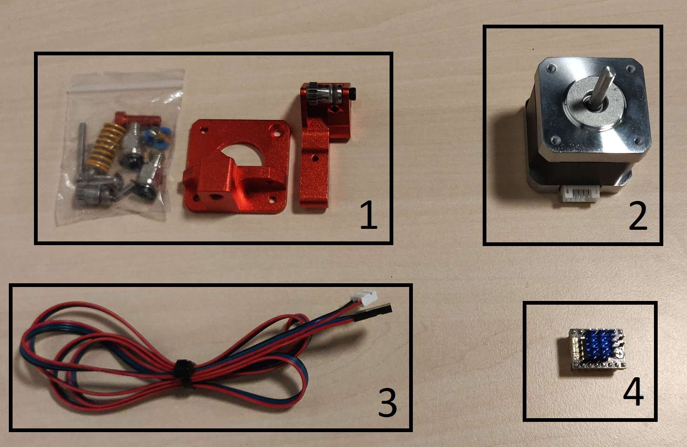

Dualextruder
Preparation
Parts needed
For this upgrade, a number of parts a required. These can usually be found on Amazon. A few parts will have to be printed.

Purchased parts
- 1x Extruder (This guide uses a "BZ 3D Dual Gear Extruder") [1]
- 1x Nema 17 Stepper Motor [2]
- 1x Cable to connect the motor with the driver [3]
- 1x TMC2209 Driver [4]
- 8x M3 35mm bolts (to replace the builtin motor bolts, as they are too short for this mounting technique)
- 1x Bowden tube 50cm (could get 1m capricorn tube and upgrade both extruders)
- 2x Push fittings PC4-M10 (you need 3, but there is 1 extra included with the Neptune 3)

Printed parts
Tools needed
- 2.5mm hex key
- 2.0mm hex key
- 1.5mm hex key
Assembly

Step 1
Assemble the extruder onto the motor like the image, with the printed motor holder inbetween.

Step 2
Remove all screws from the bottom of both motors (they will stay in place), and unplug the cable from the existing motor.
Wiggle the new motor-extruder onto the old motor from the bottom, and attach the printed bottom plate to the motors with the 35mm M3 screws.
Last update:
November 22, 2022